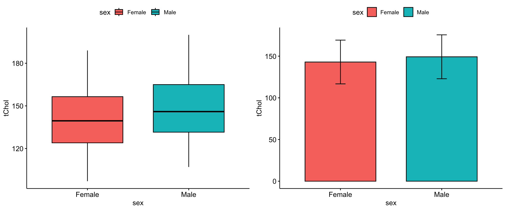
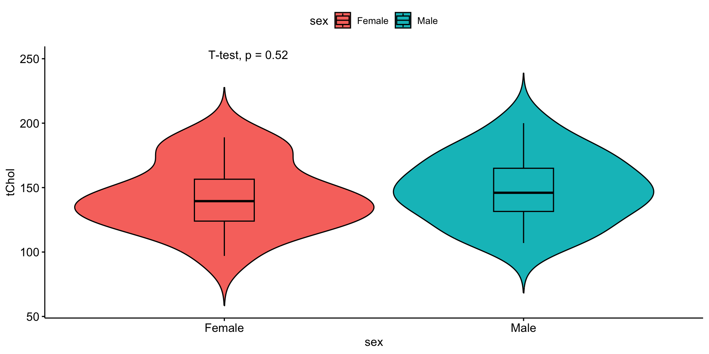
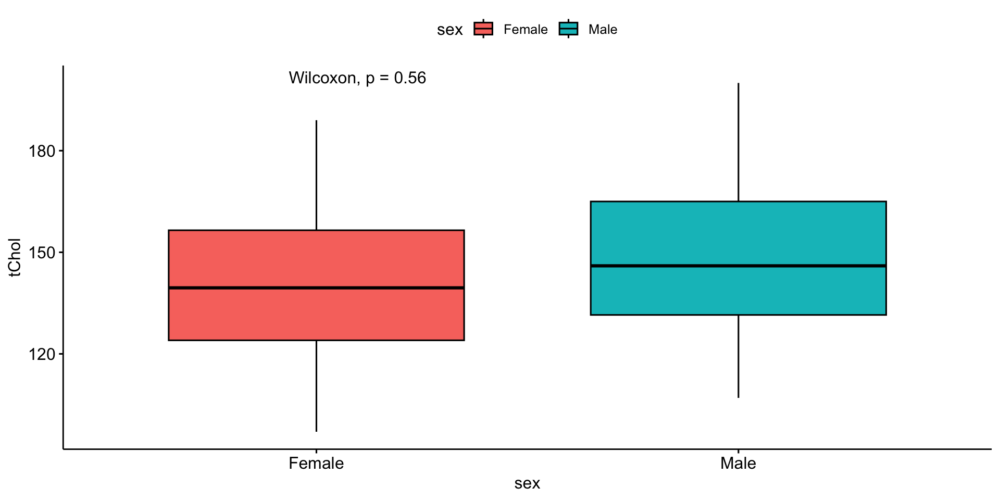
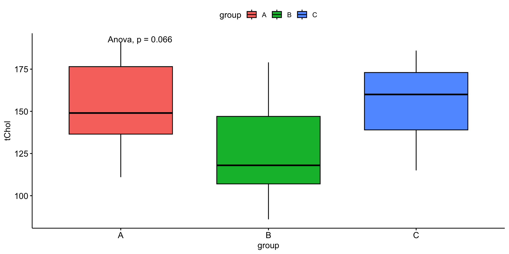
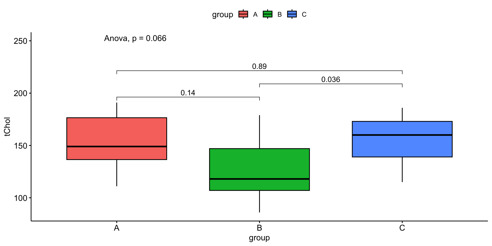
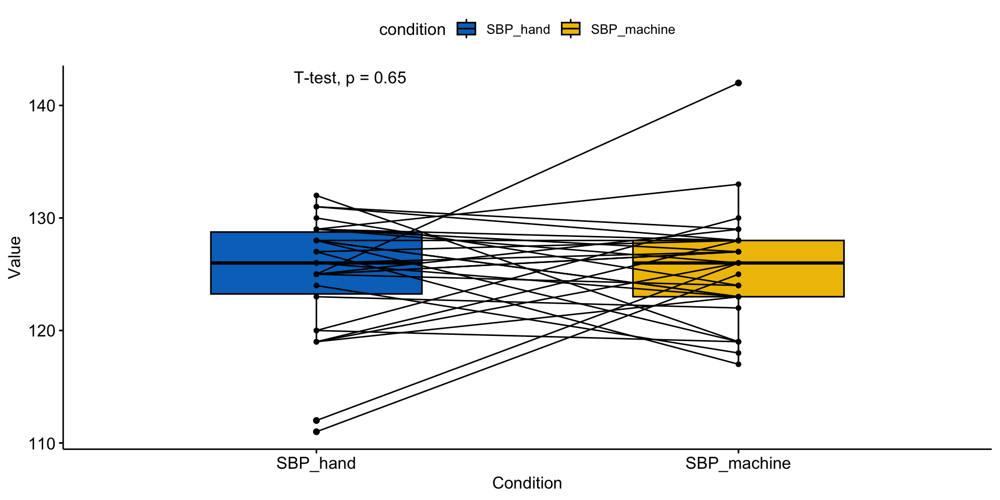

의학연구 위한 기초통계(Table 1)
기본반 1일차 2교시 | 통계이론
김진섭
2026-07-20
기초통계(Table 1)
Basic statistics
Executive Summary
연속변수의 2그룹 비교: 정규분포 인정하면 t-test, 아니면 Wilcox-test
연속변수의 3그룹 이상 비교: 정규분포 인정하면 one-way ANOVA, 아니면 Kruskal–Wallis one-way ANOVA
범주형 변수의 그룹 비교: 샘플수 충분하면 Chisq-test, 아니면 Fisher-test
기술통계?
평균(mean), 중위수(median), 분산(variance), 빈도표(frequency table)등의 데이터를 설명하는 숫자들, 히스토그램(histogram), 상자그림(box-plot)같은 그래프 를 의미한다.
그러나 대부분의 의학 연구는 단순한 기술 통계가 아닌 그것들의 그룹 비교(ex: 성별, 질환 유무)가 Table 1에 제시됨.

연구의 흐름?
기술 통계로 데이터를 보여주고
단변량(univariate) 분석으로 가설검정
다변량(multivariate) or 소그룹(subgroup) 분석 - 다른 변수들의 효과를 보정.
단변량 분석에서 끝나는 간단한 연구도 많고, 이는 본질적으로 기술 통계의 그룹 비교와 같음. 따라서 Table 1에 필요한 통계를 알면 그것만으로도 간단한 의학 연구를 할 수 있다.
연속 변수의 그룹 비교
2그룹: t-test
2 그룹 평균 비교
- 각 그룹의 평균과 표준편차 필요.
https://www.evanmiller.org/ab-testing/t-test.html 에서 바로 가능.
Welch Two Sample t-test
data: tChol by sex
t = -0.64993, df = 27.5, p-value = 0.5211
alternative hypothesis: true difference in means between group Female and group Male is not equal to 0
95 percent confidence interval:
-25.9644 13.4644
sample estimates:
mean in group Female mean in group Male
143.00 149.25 여자의 평균 콜레스테롤 값은 143, 남자는 149.2 이고 \(p\)-value는 0.521
var.equal = F는 등분산 가정 없이 분석하겠다는 뜻. 등분산 가정이란 두 그룹의 분산이 같다고 가정하는 것인데, 계산이 좀 더 쉽다는 이점이 있으나 아무 근거 없이 분산이 같다고 가정하는 것은 위험한 가정이다.
Two Sample t-test
data: tChol by sex
t = -0.64977, df = 28, p-value = 0.5211
alternative hypothesis: true difference in means between group Female and group Male is not equal to 0
95 percent confidence interval:
-25.95316 13.45316
sample estimates:
mean in group Female mean in group Male
143.00 149.25 앞서는 Welch t-test 였는데 이름이 바뀐 것을 확인할 수 있고 \(p\)-value도 0.521로 다름. - 특별한 경우가 아니고서야 위험한 등분산가정을 할 필요가 없음.
R 에서 디폴트도
F임.- 2그룹에서 ANOVA 하면 (등분산 가정한) t-test와 동일.
-
등분산 가정없는 ANOVA 도 있음.


2그룹: wilcox-test
정규분포 못믿을때: 2 그룹 중위값 비교
값 자체가 아닌 순위정보만 이용 - 비모수검정
Median [IQR(25%-75% quantile)] 로 표시
정규분포 따르는지 아닌지 테스트하는 정규성검정은 불필요.
임상적으로 판단하는것이 좋다. 키나 몸무게는 정규분포, CRP나 자녀수는 정규분포 안함.

3그룹 이상: One-way ANOVA
3 그룹 이상의 평균 비교
2그룹씩 짝을 지어서 t-test를 반복할 수도 있으나, Table 1은 보통 하나의 \(P\)-value만 제시함.
전체적으로 튀는 것이 하나라도 있는가?를 테스트하는 ANOVA.
어떤 그룹이 차이나는지는 관심없음.
사후(post-hoc) 분석을 이용, 어떤 것이 튀는지를 알아볼 수도 있다.
보통 우리가 쓰는 ANOVA는 비교할 모든 그룹에서 분산이 같다는 등분산 가정 하에 분석을 수행하며, 실제로 2 그룹일 때 ANOVA를 수행하면 등분산 가정 하에 수행한 t-test와 동일한 결과를 얻는다. 물론 등분산 가정없는 generalized ANOVA 도 있고 본사는 이것을 디폴트로 사용한다.
One-way analysis of means (not assuming equal variances)
data: tChol and group
F = 2.6151, num df = 2.000, denom df = 11.787, p-value = 0.1148
One-way analysis of means
data: tChol and group
F = 3.007, num df = 2, denom df = 27, p-value = 0.06622등분산 가정없는 \(p\)-value인 0.115를 이용하며, 의미는 “3 그룹에서 총콜레스테롤 값이 비슷하다(다른 것이 있다고 할 수 없다)” 이다.


3그룹이상: Kruskal–Wallis ANOVA
정규분포 못믿을때: 3 그룹 중위값 비교
값 자체가 아닌 순위정보만 이용 - 비모수검정
Median [IQR(25%-75% quantile)] 로 표시
Kruskal-Wallis rank sum test
data: tChol by group
Kruskal-Wallis chi-squared = 5.3949, df = 2, p-value = 0.06738\(p\)-value는 0.067.
범주형 변수의 그룹 비교
그룹 수나 정규분포를 고려할 필요가 없어 연속 변수일 때보다 훨씬 간단하며 딱 하나, 샘플 수가 충분한지만 확인하면 된다.
샘플 수 충분: Chi-square test
Chi-square test는 두 범주형 변수가 관계가 있는지 없는지를 파악하는 테스트.
- 세 범주형 변수일 때도 이용할 수 있으나 본 강의에서는 생략한다.
언뜻 봐서는 관계가 있는지 아닌지 잘 모르겠다. Chi-square test를 해보자.
Pearson's Chi-squared test with Yates' continuity correction
data: tb.chi
X-squared = 0.18246, df = 1, p-value = 0.6693\(p\)-value는 0.669, 혈압약 복용과 당뇨약 복용은 유의한 관계가 없다고 말할 수 있다.
샘플 수 부족: Fisher’s exact test
분석할 테이블에서 샘플 수가 너무 작은 항이 있으면 chi-square test 가 부정확해진다. 이 때는 fisher’s exact test를 쓴다.
- 현 상황보다 더 극한 상황이 나올 확률을 직접 계산함.
아까와 마찬가지로 테이블로 두 약물 복용상태를 비교하면 아래와 같다.
혈압약과 당뇨약을 모두 복용한 사람이 2명으로 좀 작아보이지만 무시하고 chi-square test를 수행하면 결과는 나오나 Warning 메시지가 뜬다.
Warning in chisq.test(tb.fisher): Chi-squared approximation may be incorrect
Pearson's Chi-squared test with Yates' continuity correction
data: tb.fisher
X-squared = 4.5971e-31, df = 1, p-value = 1두 약을 모두 복용한 사람이 2명뿐, 분석할 테이블에서 샘플 수가 너무 작은 항이 있으면 chi-square test의 계산이 부정확해진다.
fisher’s exact test 를 해 보자.
Fisher's Exact Test for Count Data
data: tb.fisher
p-value = 1
alternative hypothesis: true odds ratio is not equal to 1
95 percent confidence interval:
0.07627205 5.55561549
sample estimates:
odds ratio
0.8636115 \(p\)-value는 1, 마찬가지로 혈압약 복용과 당뇨약 복용은 유의한 관계가 없다고 할 수 있다.
의문: 무조건 fisher’s test만 하면 간단한데 chi-square test는 왜 하나?
- 샘플 수가 작을 때는 fisher’s test만 하는 것이 실제로 더 간단하고 방법론적으로도 아무 문제가 없다. 그러나 샘플 수나 그룹 수가 늘어날수록 fisher’s test는 계산량이 급격하게 증가한다. chi-square test를 먼저 수행하는 것을 권유한다.
연속변수의 짝지은 그룹비교
Paired t-test
2그룹 : Paired t-test
각 사람의 혈압을 한 번은 사람이 직접, 한 번은 자동혈압계로 측정했다고 하자. 이 때 직접 잰 혈압과 자동혈압계의 측정값을 비교한다면 t-test로 충분할까?
t-test는 혈압 재는 방법마다 평균을 먼저 구한 후 그것이 같은지를 테스트하므로 짝지은 정보를 활용하지 못한다.
각 사람마다 두 혈압값의 차이를 먼저 구한 후 평균이 0인지를 테스트하면, 짝지은 정보를 활용하면서 계산도 더 간단한 방법이 된다.
- 차이값을 먼저 구한 후 그 평균이 0인지를 테스트하는 방법이 paired t-test
그냥 t-test 로 비교해보자.
Welch Two Sample t-test
data: data.pt$SBP_hand and data.pt$SBP_machine
t = -0.45768, df = 57.863, p-value = 0.6489
alternative hypothesis: true difference in means is not equal to 0
95 percent confidence interval:
-3.224307 2.024307
sample estimates:
mean of x mean of y
125.0 125.6 각 방법의 평균을 먼저 구한 후 차이를 비교 했고, \(p\)-value는 0.649이다. 이제 paired t-test를 수행하자.
Paired t-test
data: data.pt$SBP_hand and data.pt$SBP_machine
t = -0.46171, df = 29, p-value = 0.6477
alternative hypothesis: true mean difference is not equal to 0
95 percent confidence interval:
-3.257804 2.057804
sample estimates:
mean difference
-0.6 이번에는 사람마다 차이값을 먼저 구한 후 그것이 0인지 테스트 했고, \(p\)-value는 0.648이다.

Paired t-test의 비모수버전은 wilcoxon-signed rank test 이며 아래와 같이 실행한다.
Wilcoxon signed rank test with continuity correction
data: data.pt$SBP_hand and data.pt$SBP_machine
V = 214, p-value = 0.9482
alternative hypothesis: true location shift is not equal to 0- 본 강의에서는 다루지 않겠지만 짝지은 3개 이상의 그룹은 repeated measure ANOVA 를 이용한다.
범주형 변수의 짝지은 그룹비교
Mcnemar test, Symmetry test for a paired contingency table
2그룹: Mcnemar test
약 복용 전후로 복통증상 발생에 차이가 있는지 알아본다고 하자.
이 데이터를 2 by 2 테이블로 정리하면 아래와 같다.
먼저 앞서 배운 Chi-sqaure test 를 이용한 결과를 보자.
Pearson's Chi-squared test with Yates' continuity correction
data: table.mc
X-squared = 0.17514, df = 1, p-value = 0.6756이것은 약 복용 전 복통 증상과 복용 후의 복통 증상이 얼마나 관계가 있는지 알아보는 테스트로 짝지은 정보를 활용하지 않는다.
짝지은 정보를 활용하는 mcnemar test를 수행하자.
McNemar's Chi-squared test with continuity correction
data: table.mc
McNemar's chi-squared = 0, df = 1, p-value = 1Mcnemar test는 약 복용후 증상발생이 달라진 사람 즉, discordant pair만 분석에 이용한다. 따라서 condordant pair 가 어떻든지 통계결과는 동일하게 나온다.
3그룹: symmetry test
Symmetry test for a paired contingency table*
- Mcnemar test의 일반화, 3그룹 이상에서도 가능.
http://rcompanion.org/handbook/H_05.html
Yes.after No.after Maybe.after
Yes.before 6 0 1
No.before 5 3 7
Maybe.before 11 1 12nominalSymmetryTest 함수를 쓴다.
$Global.test.for.symmetry
Dimensions p.value
1 3 x 3 0.000476
$Pairwise.symmetry.tests
Comparison p.value p.adjust
1 Yes.before/Yes.after : No.before/No.after 0.0736 0.0771
2 Yes.before/Yes.after : Maybe.before/Maybe.after 0.00937 0.0281
3 No.before/No.after : Maybe.before/Maybe.after 0.0771 0.0771
$p.adjustment
Method
1 fdr
$statistical.method
Method
1 McNemar test실습
웹 애플리케이션
직접 만든 기초통계 웹: https://openstat.ai/freeapp/basic/.
- 5메가 이하의 excel, csv 형태 혹은 sas, spss 프로그램으로 만든 데이터를 업로드하면 Table 1과 회귀분석, 로지스틱 회귀분석을 간단하게 수행하고 결과를 excel로 바로 다운받을 수 있다.

Rstudio Addins
5메가보다 큰 데이터는 jsmodule R package 를 개인컴퓨터에 설치하여 이용한다.
패키지를 설치한 후 Rstudio 프로그램의 Addins 탭을 누르면 Basic statistics 항목이 보일 것이다. 데이터를 읽고 그것의 이름을 드래그 한 상태로 Basic statistics 를 누르면 된다.

Executive Summary
연속변수의 2그룹 비교: 정규분포 인정하면 t-test, 아니면 Wilcox-test
연속변수의 3그룹 이상 비교: 정규분포 인정하면 one-way ANOVA, 아니면 Kruskal–Wallis one-way ANOVA
범주형 변수의 그룹 비교: 샘플수 충분하면 Chisq-test, 아니면 Fisher-test
- 강의록은 https://blog.zarathu.com/posts/2018-11-24-basic-biostatistics 참고
END
Zarathu Co., Ltd.